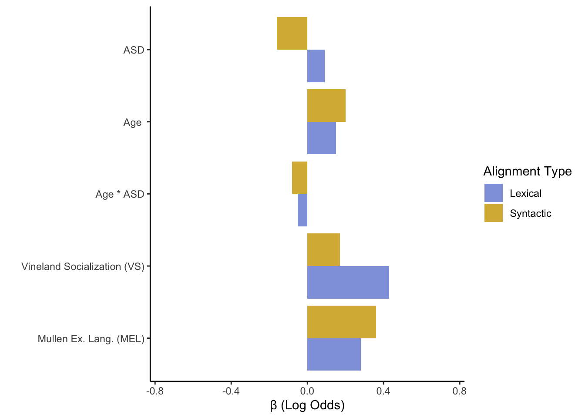
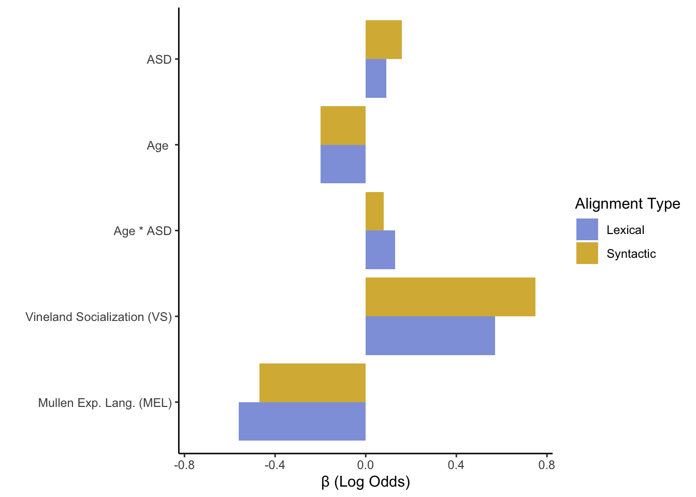
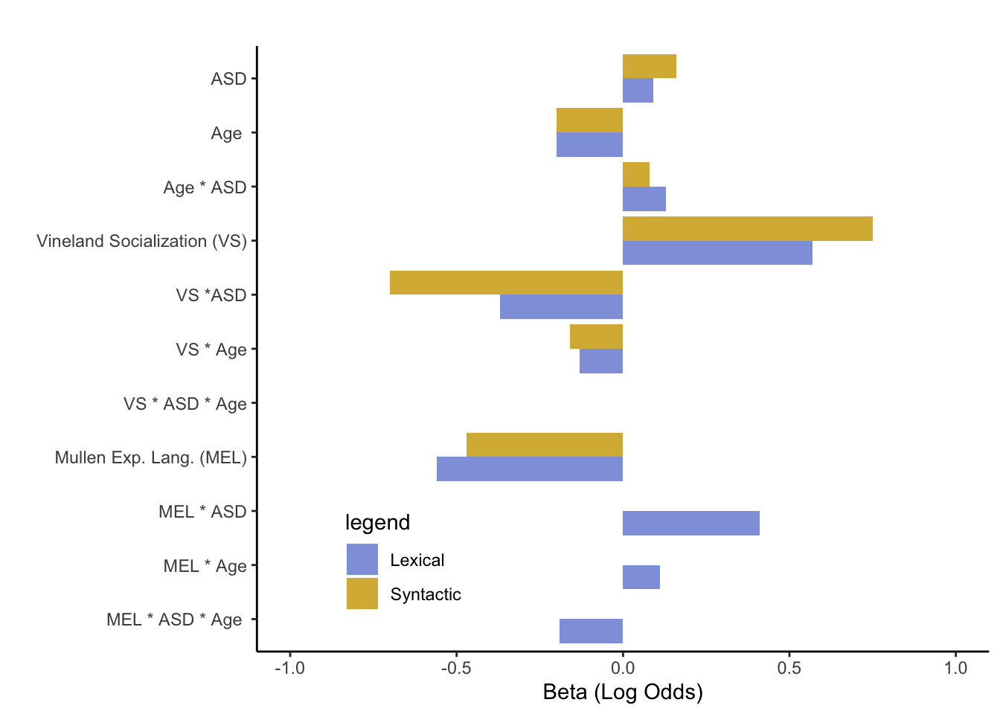

Intact but Atypical Lexical and Syntactic Alignment in Spontaneous Speech of Children with Autism Spectrum Disorder
Riccardo Fusaroli1,  , Ethan Weed1, , Deborah Fein2, , Letitia Naigles2,
, Ethan Weed1, , Deborah Fein2, , Letitia Naigles2,
1 Aarhus University
2 University of Connecticut
What is Conversational Alignment?

Figure 1: Edmund C. Tarbell, “Marjorie and Little Edmund”
Do Children Align?

Figure 2: Alignment Rate: Do Children Align?
How Much do Children Align?

Figure 3: Alignment Rate: Do Children Align?
How Much of Children’s Alignment is Exact Repetition?

Figure 4: Exact Repetitions